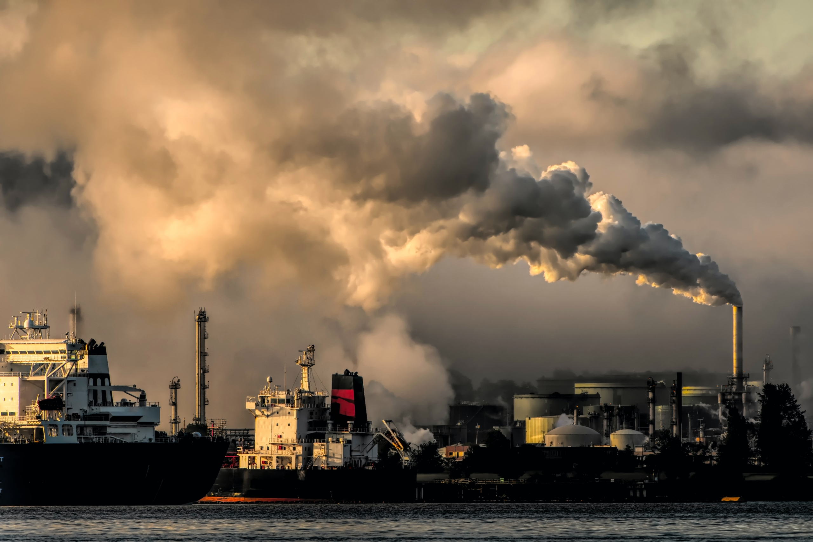

Air

Considered as the most impactful of the three, air pollution severly affects the biodiversity of life in many ecosystems around the world by contaminating the air with harmful chemical, physical, or biological agents. Not only that, it also has harmful effects to human life. On average, air pollution causes the deaths of approximately seven million individuals annually.
Land
Another type of pollution that involves the deposition or improper disposal of solid and liquid waste on land, which leads to the contamination of the soil and groundwater. It imposes health risks to human inhabitants near contaminated areas as the chance of outbreak of vector-borne diseases and illnesses transmitted by rodents, insects, or other pests and animals are increased.
Water
Water pollution is the release of chemicals, biohazards, wastes, or other harmful substances, to water or marine environments. It poses a severe risk to underwater organisms and animals, as it introduces toxic conditions to these life forms. Furthermore, it also encourages the transmission of water-borne diseases such as cholera and typhoid fever, which can impact numerous communities.